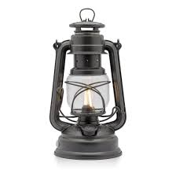
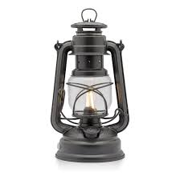

Personal Information
 

- Full Name: Sarath Chandralal Fonseka
- Date of Birth: December 18, 1950 (Age 73)
- Nationality: Sri Lankan
- Ethnicity: Sinhalese
- Religion: Buddhism
- Education:
- Primary and Secondary Education: St. Joseph's College, Colombo
- Graduated from the Defence Services Command and Staff College
- Profession: Former General, Politician
- Spouse: Anoma Fonseka
- Children: Three children
- Residency: Colombo, Sri Lanka
Political Status
- Current Position: Member of Parliament
- Political Party: Democratic Party
- Previous Positions: Minister of Public Security
Political Background and Career
- Former Chief of Defence Staff of the Sri Lankan Armed Forces.
- Played a significant role in the Sri Lankan Civil War, particularly in the final stages.
- Entered politics after retirement and has been a member of several political parties.
- Advocates for national security and military reforms.
Notable Political Initiatives and Contributions
- National Security: Focused on strengthening national security and defense capabilities.
- Military Reforms: Advocates for comprehensive reforms in the military sector.
- Social Programs: Promotes initiatives for veteran welfare and community development.
2024 Presidential Election
- Presidential Candidate (2024): Running on a platform of national security, military reform, and stability.
- Campaign Focus:
- Enhancing national security and defense.
- Implementing military and law enforcement reforms.
- Promoting stability and effective governance.
- Election Symbol: The Star, representing leadership and vision.
Promises to the Country
- Enhanced Security: Commit to improving national security and defense systems.
- Military Reforms: Implement reforms to modernize and strengthen the military.
- Veteran Support: Increase support and welfare programs for veterans and their families.
- Economic Stability: Focus on policies that promote economic stability and growth.
- Community Development: Invest in community development projects and social programs.
Political Achievements
- Leadership in Conflict: Recognized for his leadership during the Sri Lankan Civil War.
- Military Command: Played a key role in strategic military operations.
- Public Security Initiatives: Contributed to several initiatives aimed at enhancing public security.
Controversies & Criticisms
- Human Rights Allegations: Faced criticism and allegations regarding human rights during the Civil War.
- Political Struggles: Encountered challenges and criticisms in his political career.
- Public Perception: Struggled with issues related to public perception and political opposition.
Personal & Family Life
- Family: Married to Anoma Fonseka, with three children.
- Lifestyle: Known for his disciplined and rigorous lifestyle.
Visual and Symbolic Representation
- Appearance: Often seen in military or formal attire reflecting his background and role.
- Election Symbol: The Lanther, symbolizing leadership and vision for the future.
Color and Branding
- Campaign Colors: Dark Green (symbolizing strength and resilience) and White (symbolizing integrity and clarity).